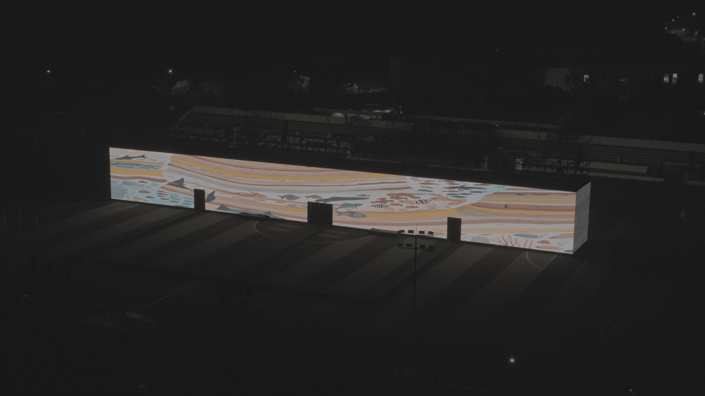
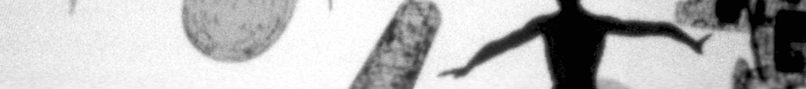
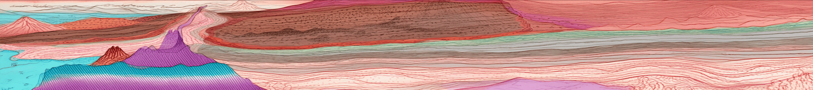
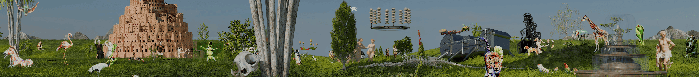
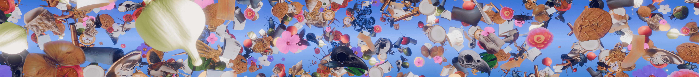

Metamorphosis
PROJECT INFO
CLIENT
China Academy of Art
FORMAT
Four-channel video installation
DISPLAY
72m × 8m × 8m four-sided LED cube
DURATION
4'18"
YEAR
2025
ROLE
Co-Director / Lead Production
TOOLS
Unreal Engine / Stable Diffusion / Blender / StyleGAN / Adobe Premiere




